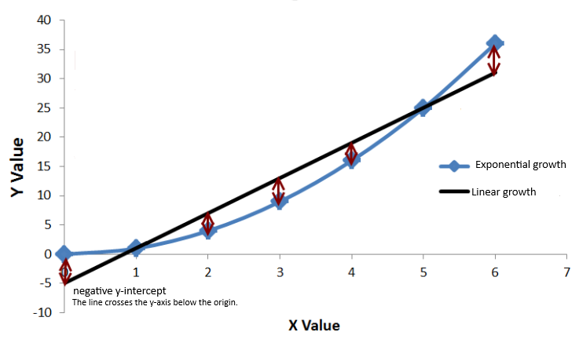

Chapter 3 Poisson Linear Regression
By Eliana Perea Barreto
3.1 Overview
Poisson regression stands as a powerful method suited for the analysis of count data, focusing on events expressed as whole numbers. Unlike linear regression, which handles continuous data, Poisson regression suits situations reflecting a Poisson distribution, where the dependent variable (y) represent counts within fixed temporal or spatial boundaries.
3.2 Algorithmic Framework
3.2.1 Data Nature
In contrast to continuous variables, Poisson Distribution data points are restricted to non-negative integers, where (y) can only assume values of zero or greater. Illustratively, let’s take a practical look to the implementation of this idea by analyzing the response variable (y) arr_delay from our study case which, as previously mentioned, is aimed at inspecting the relationship between carrier name and the frequency of flight delays.
## Min. 1st Qu. Median Mean 3rd Qu. Max.
## -59.000 -17.000 -4.000 -2.837 6.013 60.000Examining the dependent variable arr_delay, a main challenge arises as this predictor contains continuous values. To address this, the values are spitted into intervals of 3 minutes each. So that, the occurrence of arrival delays for each carrier can be quantified. Looking at the summary, it’s also possible to acknowledge that the median and mean reveals a prevalence of negative values deemed irrelevant, as the goal of this exercise is to inspect the relationship between the presence (not the absence) of arrival delays for each carrier. Thus, all values lower or equal to zero won’t be taken into consideration. Click on code preview to see how the data was counted and segmented by intervals of time.
Code Preview
interval <-seq(1, upper_bound+0.5, by = 3) # 0.5 is needed as the count is asymmetrical.
# Discretize arrival delays into intervals and count occurrences.
delay_counts_1 <- data_flight %>%
filter(arr_delay > 0)%>%
mutate(delay_interval = cut(arr_delay, breaks = interval, right = T, include.lowest = T))%>%
group_by(delay_interval, carrier)%>%
summarise(delay_count = n())The distribution of the newly generated count data across time intervals serves as the model’s dependent variables and it is assigned to the predictor delay_count. In the visualization below, you’ll observe that darker shades indicate a higher frequency of events per delay interval of time and carrier name.
As for the independent variable, it’s evident from the plot that the values in carrier are nominal categorical. Which is okey, as independent variables can be of any type in Poisson Regression. Sometimes they must be encoded appropriately before fitting the model, for instance through dummy variables, one-hot encoding or factorization. However in this case, as the main focus is on examining the association between delay counts and carrier identity with no other predictor variables included, the categorical variable “carrier” can directly be implemented in the model .
3.2.2 Regression equation
A few things can be derived from the assumption that the dependent variable in a Poisson-like distribution represent counts events occurring within a fixed boundary. For example, if those data points were to be represented in the Cartesian plane, they would also exist in a fixed space. In this scenario, a standard regression line, which may also predict negative values, is unsuitable for Poisson regression. Look at the example below:

Notice that the line representing linear growth can very easily go below the origin at any given point while the starting point of the exponential line remains fixed. A non-linear relationship, typified by an exponential line, proves better-suited for this model. Consequently, the concept of exponential growth is included within the model’s regression equation, where a logarithmic transformation withholds the relationship between the dependent variable and the independent variable with its coefficients.
\[ y = e^{(\beta_0 + \beta_1x_1)} \quad\text{ or }\quad log(y) = \beta_0 + \beta_1x_1 \]
It’s essential to recognize that (y) symbolizes the incidence rate of an event per unit of exposure, rather than the count of observed events. Replaced by the symbol (λ) or notated along with y∼Poisson(λ), (y) is understood as a rate parameter. This idea is pivotal, as concepts like the mean and variance hinge on it. For instance, since (λ) denotes the average rate of event occurrences within a fixed interval, the mean (expected value) remains equivalent to (λ). Consequently, as the mean increases, the range of possible outcomes expands. In other words, the distribution’s variability increases, which emphasizes the symmetrical association between the mean and the variance in Poisson Distribution.
\[ \lambda = e^{(\beta_0 + \beta_1x)} \quad \quad \text{or} \quad \quad y=e^{(\beta_0 + \beta_1x_1)} \quad y\sim Poisson(\lambda) \]
Elements of this equation, such as the rate parameter (λ) and the coefficients (β0, β1), are automatically calculated through the implementation of the function GLM with family set to poisson glm(..., family = "poisson").
Ultimately, before starting training or prediction, the model will be fitted with all available data to evaluate the accuracy of the model and the relationship of the variables.
summary
##
## Call:
## glm(formula = delay_count ~ carrier, family = "poisson", data = delay_counts)
##
## Coefficients:
## Estimate Std. Error z value Pr(>|z|)
## (Intercept) 1.83468 0.09166 20.016 < 2e-16 ***
## carrierAA 0.51139 0.11714 4.366 1.27e-05 ***
## carrierAS -1.83468 0.71302 -2.573 0.010079 *
## carrierB6 1.01891 0.10622 9.592 < 2e-16 ***
## carrierDL 0.71866 0.11087 6.482 9.05e-11 ***
## carrierEV 1.14085 0.10465 10.901 < 2e-16 ***
## carrierF9 -1.54700 0.50833 -3.043 0.002340 **
## carrierFL -0.79859 0.20164 -3.960 7.48e-05 ***
## carrierHA -1.83468 1.00419 -1.827 0.067696 .
## carrierMQ 0.53408 0.11544 4.626 3.72e-06 ***
## carrierOO -1.83468 1.00419 -1.827 0.067696 .
## carrierUA 0.98072 0.10675 9.187 < 2e-16 ***
## carrierUS 0.17185 0.12963 1.326 0.184948
## carrierVX -0.76997 0.20709 -3.718 0.000201 ***
## carrierWN -0.27345 0.14404 -1.898 0.057639 .
## carrierYV -1.83468 0.71302 -2.573 0.010079 *
## ---
## Signif. codes: 0 '***' 0.001 '**' 0.01 '*' 0.05 '.' 0.1 ' ' 1
##
## (Dispersion parameter for poisson family taken to be 1)
##
## Null deviance: 3245.5 on 198 degrees of freedom
## Residual deviance: 2563.9 on 183 degrees of freedom
## AIC: 3295
##
## Number of Fisher Scoring iterations: 5The model seems to effectively capture significant correlations among the variables, as indicated by the majority of carrier coefficients exhibiting statistically significant p-values. However, carrier US stands out with a coefficient surpassing 0.05, suggesting its potential minimal impact on delay occurrences. Thus, it might be prudent to contemplate excluding carrier US from the model. Nevertheless, before making any adjustments, let’s explore other potential factors that might be affecting the accuracy of the model.
Notably, the coefficient estimates for carriers AS, OO, HA, and YV share an identical coefficient estimate of -1.83468 which is an unusual situation, unless these carriers are somehow grouped by a common circumstance. Upon reviewing the plot presented above, it’s apparent that these carriers are consistently associated with limited data, which is also evident by their relatively high standard errors (0.71302 for carriers AS and YV, and 1.00419 for carrier OO). The scarcity of data leads to less precise estimates, thus removing these coefficients might be a wise decision to improve the model’s reliability and predictive accuracy.
delay_counts_new <- delay_counts[!(delay_counts$carrier %in% c("AS", "OO", "YV", "HA")), ]
poisson_model_eval <- glm(delay_count ~ carrier, data = delay_counts_new, family = "poisson")summary
##
## Call:
## glm(formula = delay_count ~ carrier, family = "poisson", data = delay_counts_new)
##
## Coefficients:
## Estimate Std. Error z value Pr(>|z|)
## (Intercept) 1.83468 0.09166 20.016 < 2e-16 ***
## carrierAA 0.51139 0.11714 4.366 1.27e-05 ***
## carrierB6 1.01891 0.10622 9.592 < 2e-16 ***
## carrierDL 0.71866 0.11087 6.482 9.05e-11 ***
## carrierEV 1.14085 0.10465 10.901 < 2e-16 ***
## carrierF9 -1.54700 0.50833 -3.043 0.002340 **
## carrierFL -0.79859 0.20164 -3.960 7.48e-05 ***
## carrierMQ 0.53408 0.11544 4.626 3.72e-06 ***
## carrierUA 0.98072 0.10675 9.187 < 2e-16 ***
## carrierUS 0.17185 0.12963 1.326 0.184948
## carrierVX -0.76997 0.20709 -3.718 0.000201 ***
## carrierWN -0.27345 0.14404 -1.898 0.057639 .
## ---
## Signif. codes: 0 '***' 0.001 '**' 0.01 '*' 0.05 '.' 0.1 ' ' 1
##
## (Dispersion parameter for poisson family taken to be 1)
##
## Null deviance: 3157.0 on 192 degrees of freedom
## Residual deviance: 2563.9 on 181 degrees of freedom
## AIC: 3275
##
## Number of Fisher Scoring iterations: 5The residual deviance of the revised model remains at 2563.9, indicating that the overall model fit remains consistent even after excluding carriers AS, OO, HA and YV from the dataset. The decrease in the AIC value from 3295 to 3279 suggests a slight enhancement in model fit following the removal of the three carriers. However, the standard error and p-value for all coefficients remain unchanged, so carrier US still lacks significant influence, as evidenced by its p-value of 0.184948.
3.3 Training & Predicting Process
Despite, GLM for Poisson regression doesn’t have specific built-in functions for training and testing like some machine learning algorithms, it can still be employed along with standard techniques for forecasting. Following the assesment of the data distribution, the subsequent phase involves dividing the dataset into training and testing subsets to evaluate the model’s performance. 80% of the data is allocated for GLM fitting while the remaining 20% is reserved for the evaluation the model’s predictive accuracy using the predict() function.
Code Preview
# Split the data (80% training, 20% testing)
index <- sample(1:nrow(delay_counts_new), 0.8*nrow(delay_counts_new))
training_data <- delay_counts_new[index, ]
testing_data <- delay_counts_new[-index, ]poisson_model <- glm(delay_count ~ carrier, data = training_data, family = "poisson")
predicted_counts <- predict(poisson_model, newdata = testing_data, type = "response")When assessing the precision of predictions generated by a Poisson regression model, various metrics can be utilized to measure the correspondence between the model’s predictions and the actual data. Nonetheless, let’s first initiate the process by gaining insight into the relationship between the predicted and the actual counts through a line plot..
From the observed visual data, disparities between the anticipated and observed counts stand out, particularly within the intervals [1,4] and [4,7]. Nonetheless, it is imperative to quantify the model’s performance using metrics such as the Mean Squared Error (MSE) and Mean Absolute Error (MAE) to assess the real efficiency of the current model. These metrics will be compared against a baseline which is made of the MSE and MAE of the training data’s delay counts. In the analysis, the following values were obtained:
Code Preview
baseline_predictions <- rep(mean(training_data$delay_count), nrow(testing_data))
# Calculate MSE and MAE for the baseline model
baseline_mse <- mean((actual_counts - baseline_predictions)^2)
baseline_mae <- mean(abs(actual_counts - baseline_predictions))
# Calculate Model's MSE and MAE
mse <- mean((actual_counts - predicted_counts)^2)
mae <- mean(abs(actual_counts - predicted_counts))## [1] "Baseline MSE: 687.829606540645"## [1] "Model MSE: 662.875473599456"## [1] "Baseline MAE: 13.9761904761905"## [1] "Model MAE: 12.7993394506493"The results of the evaluation indicate that the baseline model achieves a lower MSE and MAE compared to the predictive model. These findings suggest that the baseline model performs slightly better than the predictive model in terms of both MSE and MAE. However, the differences between the metrics are relatively small. Nevertheless, further investigation and refinement of the predictive model may be necessary to achieve significant improvements in performance, particularly for intervals [1,4] and [4,7].
3.4 Strengths & Limitations
3.4.1 Strengths
Poisson regression stands out as an ideal method for examining phenomena such as occurrences of flight delays categorized by intervals, offering a robust framework for modeling events expressed as whole numbers. Its alignment with the Poisson distribution ensures accurate representation of count data dynamics, enhancing precision in modeling outcomes. Moreover, the model’s flexibility in handling various predictor types allows for versatile modeling approaches.
3.4.2 Limitations
While powerful for count data analysis, comes with its share of limitations. The assumption of independence among events, while foundational, may not always reflect real-world scenarios accurately. Overdispersion, where the variance exceeds the mean, can inflate errors and compromise accuracy. Despite its flexibility in handling predictor variables, Poisson regression may struggle to capture complex relationships effectively, potentially limiting its predictive capabilities. Moreover, its sensitivity to outliers necessitates meticulous preprocessing to mitigate their influence on model stability.